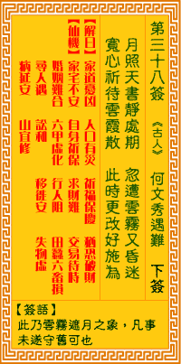

观音灵签第三十八签 【何文秀遇难】 |
 | |||
镜月当空出匣时 刹那云雾暗昏迷 宽心守时浮云散 更改相宜可望为 |
||||
| 【吉凶】 | 中平签 | 【宫位】 | 申宫 | |
| 【签语】 | 此卦云雾遮月之象，凡事未遂守旧也。 | |||
| 【解曰】 | 家道忧凶 人口有灾 祈福保庆 犹恐破财 | |||
| 【仙机】 | 此签家宅不安，自身祈保，求财难，交易待时，婚姻难合，六甲虚惊，行人阻，田蚕六畜损，寻人遇，讼和，移徙安，失物虚，病延安， 山坟宜修。 | |||
| 【详解】 | 天上的明月正初出，突然之间云遮雾掩隐去了光芒;且安心静守飘云自然散去，柳暗花明前景可期。 家居无忧，人口阴灾，作福保祏，又恐破财。此签浮云遮月之象，凡事守旧待时。 本签为浮云遮月之象。目前事事无须如意之时亦即是劝君叵动。俟时运之来至。动之方吉利。唯有汝宽心守待。耐心待至拨云见皎洁月娘时。汝即家居无忧。人口阴灾作福。保佑之。不致有破财之时。守之。不宜不遵行。 此签有”急躁武断”之意。意味当事人，小不忍则乱大谋。”忍耐”的含意很广，范围包罗万象，不单只是表面上的形容。”忍耐”是积极的、勇敢的、坚强的、乐观的、真心的。举历史故事的例子来说：『刘琨闻鸡起舞』，是积极的忍耐。『宰相萧何追韩信』，是勇敢的忍耐。『程婴忍辱匿孤』，是坚强的忍耐。『诸葛亮隐居卧龙冈』，是乐观的忍耐。『郭子仪免冑见回纥』，是真心的忍耐。 藉由忍耐，时时刻刻考验我们的心性，并激荡出无比的智慧。凡事忍耐，并不间断地充实自我本身的学识。 | |||
| 【典故】 | 《何文秀玉钗记》，传奇剧本故事。穷书生何文秀同富家女王琼珍相爱，出奔海宁，何文秀被土谊陷害，王琼珍剪发毁容，历经各种痛苦 灾难，坚不再嫁，二人终得重聚，结为夫妻 | |||